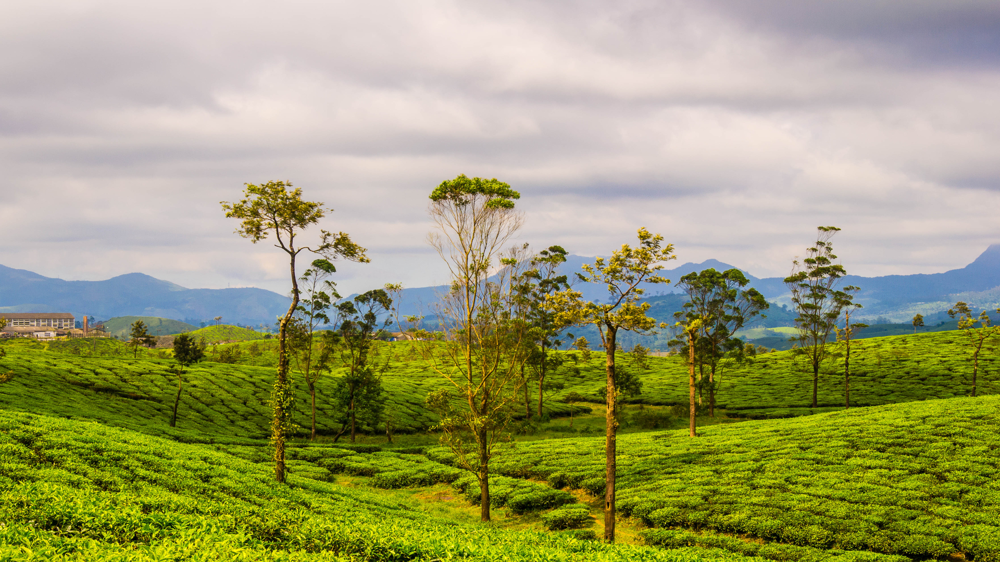

EXPLORE THRISSUR
Originally known as Thirusivapperoor and previously by its anglicized form Trichur, Thrissur is the cultural capital of Kerala due to its rich history, cultural heritage and archaeological wealth. The Kerala Kalamandalam, the Kerala Sahitya Academy and the Kerala Sangeetha Nadaka Academy are located here. Built around a 65-acre hillock called the Thekkinkadu maidan, Thrissur is also the capital of the eponymous Thrissur district. Thrissur is a city in the south Indian state of Kerala. It's known for sacred sites and colorful festivals. In the center is Vadakkumnathan Temple, dedicated to Lord Shiva and adorned with murals. The ornate, Indo-Gothic Our Lady of Dolours Basilica is nearby. To the north, Thiruvambady Temple is home to several elephants. Sakthan Thampuran Palace houses an archaeology museum with bronze statues and ancient coins.
Athirappilly Falls, is situated in Athirappilly Panchayat in Chalakudy Taluk of Thrissur District in Kerala, India on the Chalakudy River, which originates from the upper reaches of the Western Ghats at the entrance to the Sholayar ranges. It is the largest waterfall in Kerala, which stands tall at 80 feet. Just a short drive from Athirappilly to the Vazhachal falls, which is close to dense green forests that are home to many endangered and endemic species of flora and fauna. There is another waterfall on the way from Athirappilly to Vazhachal Falls, in close proximity to the road, which is locally called "Charpa Falls". Athirappilly Falls is the largest waterfall in Kerala and is nicknamed "The Niagara of India".
The Thrissur Pooram is an annual temple festival held in Thrissur, Kerala, India. It is held at the Vadakkunnathan (Shiva) Temple in Thrissur every year on the Pooram day—the day when the moon rises with the Pooram star in the Malayalam Calendar month of Medam. It is the largest and most famous of all poorams. Sakthan Thampuran ordained the temples into two groups, namely "Paramekkavu side" and "Thiruvambady side". These are headed by the principal participants, Paramekkavu Bagavathi Temple at Thrissur Swaraj Round and Thiruvambadi Sri Krishna Temple at Shoranur road.
Malakkappara in Thrissur district is a tea town bordering the neighbouring state of Tamilnadu. A small hill station surrounded by Parambikulam Tiger Reserve, Anamalai Tiger Reserve and Nelliampathy hills, Malakkapara is where the famous SholayarRiver drains. This hill station is located enroute to Athirappally from Sholayar forest. This place is one of the hot spots of tourists for its soothing climate and picture postcard valleys of tea.